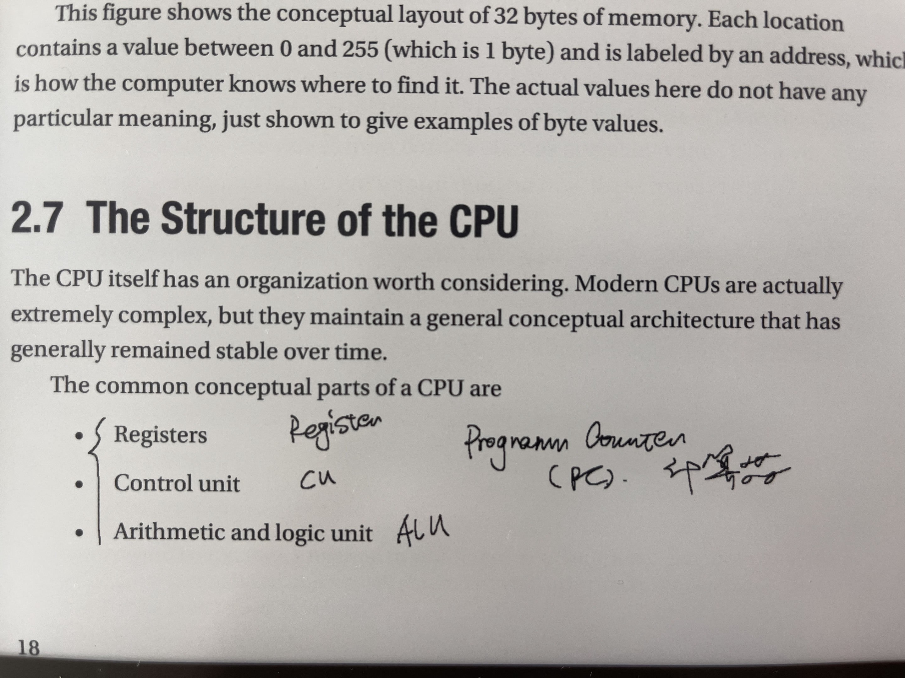

汇编入门
 william 收录于 Learning
william 收录于 Learning最近在学习汇编语言，这里做一下简要的记录，主要使用的参考书：
- Jonathan Bartlett: Learn to Program with Assembly: Foundational Learning for New Programmers
- Jonathan Bartlett: Programming from the Ground Up
- CSci 241: Assembly Language Programming
- MIT Computation Structures
其实，我最早是先看了 PGU，因为这是一本开源书籍，后来才看阅读 LPA，发现 LPA 其实是 PGU 的出版社书籍，是对 PGU 进行更加系统化的整理，并升级了汇编到 x86-64 。所以推荐直接看 LPA 即可。
Ch01：为何学习汇编
理解计算机内部
计算机编程语言划分为
- High-level programming languages （HLPL）
- Low-level programming languages （LLPL）
对于大部分的程序员，我们一般都使用 HLPL 进行编程开发，而较少使用（甚至看不懂）LLPL。这是因为随着计算机技术的发展，越来越多的高级编程语言为我们做了太多的事情，使得我们远离底层、面向问题进行编程。HLPL 主要做的事情是：
- 通过逐层的抽象（Abstract），允许程序员尽量远离计算机底层技术，而直接调用编程语言提供的语法糖进行操作。这些编程语言通过
compiler或者interpreter翻译成机器语言 - 程序员不再思考计算机内部如何实现指令运算，而只需要按照高级程序语言的规则，把问题空间映射到解决方案空间。
然后，如果我们需要更深入的理解计算机内部的运行机制，理解我们在高级编程语言设计的求解方案如何被映射到计算机的运行指令（机器语言，0-1），就需要站在计算的解读思考，理解操作指令在内部是如何被执行的。
虽然现代计算机已经高度智能化，AI 正如火如荼的渗入我们生活的各个方面。但在底层，计算机其实只能进行有限的运算，理解特定的操作指令，即二进制代码（亦或机器代码）。我们这里说的理解计算机，当然不是直接去看由这些 0-1 所组成的机器代码，而是以人类可以理解的方式阅读机器代码。这就是汇编语言（Assemly Language）。
可以把汇编理解成机器代码的翻译，而且这种关系是一一映射，即一个汇编指令就是代表一条计算机所能执行的最小单元指令，如数字相加：
-
对于高级语言：
a = 0 + 1 -
对于机器代码：
48 83 c7 01 -
对于汇编语言：
addq $1 %rdi
|
|
|
|
通过上面的例子，我们可以知道计算系在底层是如何进行运算的
- 先给寄存器
%rdi初始化 - 然后对寄存器
%rdi执行add指令，这个对应对应了机器代码83
可见，无论我们是否从事汇编开发，了解一些关于汇编的知识，有助于我们更加深入了解计算机内部的运行机制（英文说法是：under the hood）。
学习汇编的好处
- know how the computer really works, underneath the hood, fundamentally
- demystifying the operation of your most basic tool: the processor, how the processor itself thinks about the code
- better mental model of compiler, debugging, optimization, high-performance-related work
汇编版本：Intel vs AT&T
在上面的例子中，我们使用了 objdump 工具用来把二进制代码翻译成汇编语言，其中
-
-d表示disassemle，即反汇编。 -
-M att表示使用AT&T汇编风格展示
ISA：指令集
Instrument Set Architecture（ISA）表示计算机可以识别的不同指令架构，主流的有：
x86指令集，包括x86-32、x86-64，也称作AMD（因为最初的 AMD 提出的）。这个大部分Unix-Linux使用。ARM指令集，主要是手机设备使用。PowerPC指令集
Intel 与 AT&T 风格
虽然有assembler 生成的机器代码都是一样的（才能保证计算机实现的结果的一致且唯一），不同的组织在如何表示 assembly language 风格上却有一定的区别。目前主要有两个风格的汇编代码：
Intel也称作NASM（Netwide Assembler），这个主要是Intel公司在操作手册所使用的的汇编风格。AT&T也称作GAS（GUN Assembler）这个是Linux、GCC所采用的汇编风格。
我们刚才说过，不同汇编语法只是的风格上有所差别，但最近生成的机器代码都是一样的。因此，也可以通过工具将两个汇编风格进行互转。以下是关于两者的参考链接：
| Intel | AT&T | |
|---|---|---|
| 注释(comment) | 使用英文分号：; |
使用 #，即 c-style |
| register | 不需要前缀 % mov eas, 1 |
需要带前缀 % movq $1, %eax |
| direction | instr dest src mov eas, 1 |
instr src dest movq $1, %eas |
| memory (address) |
mov eax,[ebx] mov eax,[ebx+3] |
movl (%ebx),%eax movl 3(%ebx),%eax |
%r vs %e
由于汇编语言的发展经历了漫长的历史过程（最近甚至可以追溯到晶体管），汇编语言在表示寄存器的符号方面也经过多次调整：
%rax%eax%ax%ah,%al
可以参考以下链接，介绍相关的历史

Ch02：理解计算机如何工作
CPU 的组成与运行



可以说，CPU 充其量就是一个机械设备，只要不断电，它都会永不停歇地讯循环执行以上命令。而作为程序员，我们需要告诉 CPU 如何正确地、严格按照我们设计的方案执行。计算机无所谓对错（bug），它们只是一台机器，本身也无法写出 bug，真正写 bug 的是人。我之前看过一篇博客，说的就是我们在写代码时，一定要秉承着没有 bug 的想法，只要我们设计的程序没有 bug，CPU 就一定没有 bug。在计算机底层的机器代码眼里，世界只有 0-1 ，或者说 on-off。
“If you want more effective programmers, you will discover that they should not waste their time debugging, they should not introduce the bugs to start with.” —Edsger Dijkstra, Turing Award Lecture (1972)
If you want a single piece of advice to reduce your bug count, it’s this: Re-read your code frequently. After writing a few lines of code (3 to 6 lines, a short block within a function), re-read them. That habit will save you more time than any other simple change you can make.
Ch03：汇编基础
首先介绍一个在 x86-64 架构中，不同的内存模块大小
-
1 byte(8 bits,0000 0000)，范围为0-255，即ASCII -
2 bytes(16 bits)，即word、short -
4 bytes(32 bits)， 即double word、long -
8 bytes(64 bits)，即quadword，这是目前主流的x86-64系统
以上的内存模块可以理解成 CPU 每次提取（请求）内存的单元，比如对于一个汇编指令
|
|
而在操作系统层面，为了加快读取内存，往往还会在增加一层抽象，采用 paging 分页的方式，以更大的模块来分配内存，一般来说，默认的 paging size 是 4k(4096 bytes)。
汇编语法

|
|
上面一个一个完整的汇编代码，我们可以进行编译，并打印出执行结果：
|
|
global(globl)
global （也可以写作 globl，二者是等价的）告诉 linker 此处设定的 label 需要保留以备他用。一般来说，如果没有添加 global 指示，linker 会把当前模块下我们自己设定的变量名忽略，而添加了 global，则要求不要这么做，因为有可能其他的模块有使用到。
特别的，.global _start 是作为可执行的入口，这个一定要保存。
_start：entry point
这个是二进制的入库，相当于 main 在 C/C++ 编程中的作用。无论汇编代码的顺序如何，操作系统在执行目标时，都是从 _start 开始逐行执行汇编代码。
label
表示一个名称，但实际上该名称所在的内存地址起始位置（以及后面紧随的内存），用来给 assembler 找到相应的内存地址。
%rax: system call code
%rax (Accumulate) 表示寄存器的作用，通常用来代表系统调用的指令，如上述代码中我们将其设置为 60，这代表 system call 的 sys_exit 代号。
具体的 system call code 可以参考：
|
|
| %rax | %rdi: arg0 | Name | Entry Point | Implementation |
|---|---|---|---|---|
| 0 | unsigned int fd | read | sys_read | fs/read_write.c |
| 1 | unsigned int fd | write | sys_write | fs/read_write.c |
| 2 | const char *filename | open | sys_open | fs/open.c |
| 3 | unsigned int fd | close | sys_close | fs/open.c |
| 4 | const char *filename | stat | sys_newstat | fs/stat.c |
| 5 | unsigned int fd | fstat | sys_newfstat | fs/stat.c |
| 6 | const char *filename | lstat | sys_newlstat | fs/stat.c |
| … | ||||
| 60 | int error_code | exit | sys_exit | kernel/exit.c |
%rdi: exit status code
用于保存系统调用的结果，访问为： 0~255
汇编工具
as
ld
汇编周边（相关工具）
hexdump
objdump
gdb(cgdb)
disassemble
Ch04：Assembly Programming
寄存器
不同功能的寄存器
我们在 [寄存器历史](###%r vs %e)列举了 x86-32 与 x86-64 架构下的寄存器类型。这里做一个总结：
-
general-purpose registers-
computational-
%rax:accumulative累计量- 用来执行
system call的代码 - 用来保存
mulq、divq的结果
- 用来执行
-
%rbx:base indexing，通常用来处理memory addressing相关的操作 -
%rcx:counting register，通过用在loop -
%rdx:data register，用来保存数据相关，如对于mulq、divq等操作，由于只能通过register或者memory address，通常是先把数值放到%rdx，然后再与%rax进行操作
-
-
data-related%rsi:source index%rdi:destination index，可以用来保存exit status code
-
-
specific-purpose registers-
%rip’：instrument point，指向下一个指令的内存地址
-
%eflags用来处理跳转指令相关的操作
-


使用不同的字节计算（内存与性能）
|
|
运算符
-
addq:-
format:
addq src dst1 2## %rdi = %rdi + %ras addq %rax, %rdi
-
-
subq-
format:
subq src dst1 2## %rdi = %rdi - %ras subq %rax, %rdi
-
-
incq：（+1）-
format:
addq dst1 2## %rdi = %rdi + 1 incq %rdi
-
-
decq：（-1）-
format:
decq dst1 2## %rdi = %rdi - 1 decq %rdi
-
-
mulq-
format:
mulq src1mulq %rdi -
注意，
mulq和divq的作用结果保留在%rax，而且只能用register或者memory address，不能用普通的number value
-
-
divq- format:
divq src - 与
mulq相同
- format:
|
|
比较
%eflags
汇编在很多地方都使用 %eflags 来判断真假，比如
jmpcmplooq，是的，loop也是通过调用decq %rcx是否为0来决定循环结束与否。（如果%rcx变为0，则%eflags设置为true（ZF））
我们可以通过 ZF 或者 CF 进行跳转，但是这个有点不直观
jzjnzjcjnc
cmp
本质上，cmp 做的事情跟 %eflags 是相关的
- 通过寄存器相减，得到一个值
- 判断这个值是否为
0然后进行ZF判断， - 但是，有意思的是，
cmp此时不会重置寄存器 - 需要注意的是，由于
cmp在实现上，是通过dst减去src的值来判断%eflags，所以如果遇到一个寄存器与一个字面数值对比，一定要把字面数值放在前面，然后减法的操作是无效的
可以这样理解
-
在操作上：
1cmpq %rax, %rbx -
在内部实现上：
1 2 3subq %rax, %rbx ## using %elags to jmp -
je:%rax == %rbx -
jne -
ja：jump Above for%rax > %rbx -
jae -
jb：jump Below for%rax < %rbx -
jbe
跳转
在介绍不同寄存器的时候，我们区分了 general 与 specific ，其中有一个寄存器 %rip 指向下一个指令的内存地址，我们可以使用 jmp 来调整。本质上，jmp 是直接找到对应 label 上的内存地址，然后跳转到那里执行指令。
因此，我们可以利用这一点，实现代码的跳转与循环。
|
|
| %rax | %rbx | %rdi | |
|---|---|---|---|
| _start | 25 | ||
| thelabel | 25 | ||
| there | 5+25=30 | ||
| label1 | 30+25=55 | 5 | |
| here | 55/5=11 | ||
| somewhere | 11 | ||
| anotherlabel | 60 | ||
| labellabel | (syscall) |
数据
bit 操作
stack 与 function
汇编函数
系统调用
模块与链接
Ch05：计算机架构与设计
相关内容
 支付宝
支付宝
 微信
微信